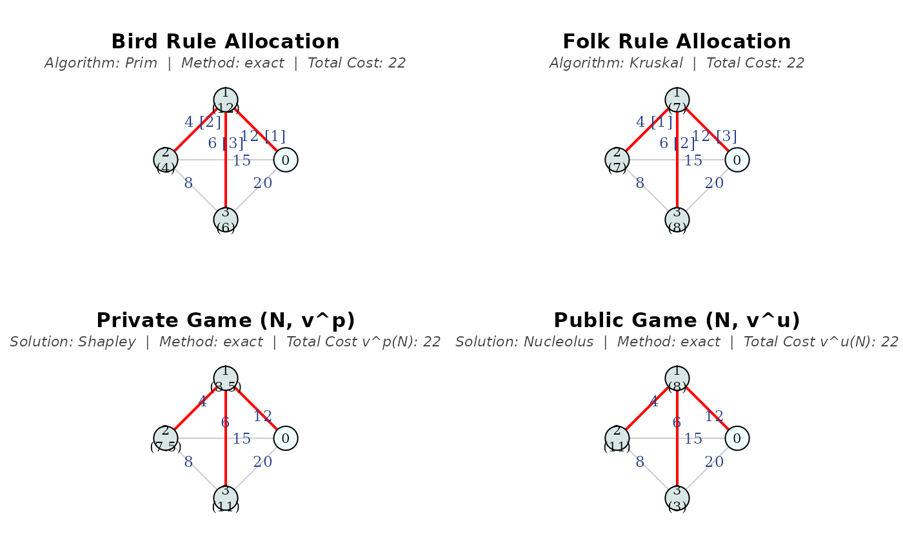
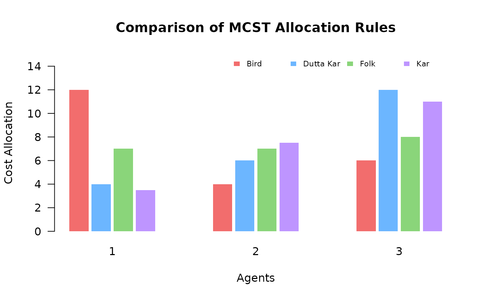

This demo runs the code from
demo("basic_rules", package = "mcstprules") in R.
# =====================================================================
# mcstprules: Basic Allocation Rules Demo
# =====================================================================
# This demo shows how to compute, visualize and compare cost
# allocation rules for Minimum Cost Spanning Tree Problems (MCSTP)
# =====================================================================
library(mcstprules)
# Helper function to pause execution for interactive use
pause <- function() {
invisible(readline(prompt = "\n[Press Enter to continue...]"))
}
# ---------------------------------------------------------------------
# STEP 1: Defining the Problem
# ---------------------------------------------------------------------
# We define a cost matrix for a network with a source (node 0) and 3
# agents. Costs reflect the connection price between nodes.
costs <- data.frame(from = c(0, 0, 0, 1, 1, 2),
to = c(1, 2, 3, 2, 3, 3),
cost = c(12, 15, 20, 4, 6, 8))
print(costs)## from to cost
## 1 0 1 12
## 2 0 2 15
## 3 0 3 20
## 4 1 2 4
## 5 1 3 6
## 6 2 3 8
pause()##
## [Press Enter to continue...]
# ---------------------------------------------------------------------
# STEP 2: Computing Allocation Rules
# ---------------------------------------------------------------------
# Algorithmic rules are derived from classical MST algorithms.
# 1. Bird's Rule: based on Prim's algorithm. Each agent pays the cost
# of the arc that connects them to the source.
mcstBird(costs)## 1 2 3
## 12 4 6
# 2. Folk Rule (ERO): based on Kruskal's algorithm. Agents divide the
# cost of connecting their components equally.
mcstFolk(costs)## 1 2 3
## 7 7 8
# Game-theoretic rules apply solution concepts from cooperative game
# theory.
# 1. Kar's Rule: coalitions connect only through their own members
# and the source (pessimistic approach).
mcstKar(costs)## S v^p(S)
## 1 {1} 12
## 2 {2} 15
## 3 {3} 20
## 4 {1,2} 16
## 5 {1,3} 18
## 6 {2,3} 23
## 7 N 22
##
## Solution: Shapley
## 1 2 3
## 3.5 7.5 11.0
# 2. Public Game: coalitions can connect through nodes outside the
# coalition at no cost (optimistic approach).
mcstGamePublic(costs, sol = "nucleolus")## S v^u(S)
## 1 {1} 12
## 2 {2} 15
## 3 {3} 18
## 4 {1,2} 16
## 5 {1,3} 18
## 6 {2,3} 22
## 7 N 22
##
## Solution: Nucleolus
## 1 2 3
## 8 11 3
pause()##
## [Press Enter to continue...]
# ---------------------------------------------------------------------
# STEP 3: Visualizing the Networks
# ---------------------------------------------------------------------
# The package can plot the MST and how the total cost is shared among
# agents.
# Set layout
old_par <- par(mfrow = c(2, 2), mar = c(2, 2, 4, 2))
bird <- mcstBird(costs, draw = TRUE, which.plot = "main")
folk <- mcstFolk(costs, draw = TRUE)
kar <- mcstKar(costs, draw = TRUE, which.plot = "main")
public <- mcstGamePublic(costs, sol = "nucleolus", draw = TRUE,
which.plot = "main")
par(old_par)
pause()##
## [Press Enter to continue...]
# ---------------------------------------------------------------------
# STEP 4: Handling Ties
# ---------------------------------------------------------------------
# When multiple MCSTs exist, rules based on Prim's algorithm can vary.
# The package automatically computes the symmetric average over all
# permutations.
# Symmetric case: agents 1 and 2 are at the same distance from the
# source
tie_costs <- c(10, 10, 2) # Format: (0,1), (0,2), (1,2)
bird_tie <- mcstBird(tie_costs)
print(bird_tie$perms)## $table
## pi 1 2
## 1 1-2 10 2
## 2 2-1 2 10
##
## $summary
## 1 2 times
## 1 10 2 1
## 2 2 10 1
##
## $nperms
## [1] 2
print(bird_tie$e_bird)## 1 2
## 6 6
# Note: Kruskal-based rules like the folk rule are unaffected by ties.
pause()##
## [Press Enter to continue...]
# ---------------------------------------------------------------------
# STEP 5: Comparison with mcstCompare
# ---------------------------------------------------------------------
# mcstCompare() computes all main rules at once and returns both a
# summary table and a bar chart for quick visual comparison.
comparison <- mcstCompare(costs)
print(comparison)## ----------------------------------
## MCST Allocation Rules Comparison
## ----------------------------------
## agent bird dutta_kar folk kar
## 1 12 4 7 3.5
## 2 4 6 7 7.5
## 3 6 12 8 11.0
plot(comparison)
# =====================================================================
# Demo completed. Explore more with ?mcstRules
# =====================================================================You can also download the raw R script here to run it locally on your computer.